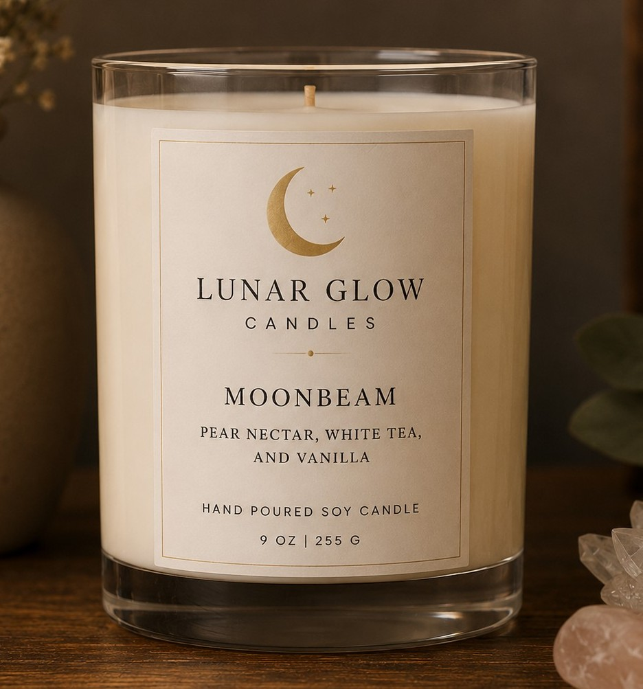

Welcome to Lunar Glow Candles

Featured Candle: Moonbeam
Lunar Glow Candles is a handmade soy candle brand created for people who enjoy cozy, peaceful spaces. Each candle is poured with care and designed to bring warmth, relaxation, and soft glowing light into your home.
Whether you're enjoying a self-care evening, curling up with a good book, decorating a bedroom, or searching for the perfect gift, our candles are designed to transform everyday moments into calming experiences. Crafted with high-quality soy wax and thoughtfully blended fragrances, every scent creates a unique atmosphere inspired by the beauty and tranquility of the night sky.
Explore the collection of our six thoughtfully crafted scents, from the sweet warmth of Pear Nectar, White Tea, and Vanilla, to the refreshing blend of Eucalyptus, Mint, and White Sage. Each fragrance is inspired by the beauty and tranquility of the night sky, helping transform ordinary moments into something truly special.